汇编代码
IDA中的汇编代码，是从原始二进制的字节码，反汇编得到的汇编代码

- 一般来说，在逆向尝试搞懂代码逻辑时，不太需要直接查看汇编代码，因为的确很难直接看懂逻辑。
- 不过，有时候也是可以通过调试，看懂部分汇编代码的逻辑的，比如：
不过有些情况下，会用到汇编代码：
- iOS逆向
- 静态分析
- 有些汇编代码中，IDA已帮忙分析和插入了相关的解释信息，值得研究逻辑时去参考
- 比如，YouTube逆向期间，IDA已帮忙给相关汇编加上了描述，指明了有些代码是vtable的部分
- 便于分析和对照，寻找对应虚函数的具体实现
- 比如，YouTube逆向期间，IDA已帮忙给相关汇编加上了描述，指明了有些代码是vtable的部分
- 有些汇编代码中，IDA已帮忙分析和插入了相关的解释信息，值得研究逻辑时去参考
- 动态调试
- 想要找到调试期间的，Xcode中汇编代码，对应的代码逻辑
- 往往就需要找到IDA中对应的伪代码是什么
- 往往就需要先去找到IDA中汇编代码的位置
- 再去F5（或Tab键）跳转到对应的伪代码的位置
- 往往就需要先去找到IDA中汇编代码的位置
- 往往就需要找到IDA中对应的伪代码是什么
- 想要找到调试期间的，Xcode中汇编代码，对应的代码逻辑
- 静态分析
IDA中显示Opcode
IDA中对于显示汇编代码时，默认：没有显示opcode
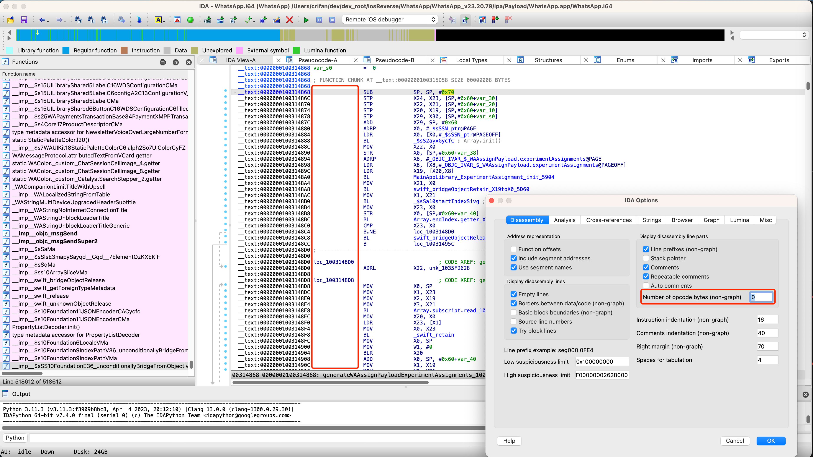
然后去设置中可以开启显示opcode，且可以指定显示几个字节的opcode
比如设置为4：
IDA->Options->General->IDA Options->Disassembly->Display disassembly line partsNumber of opcode bytes(non-graph):4
效果是：
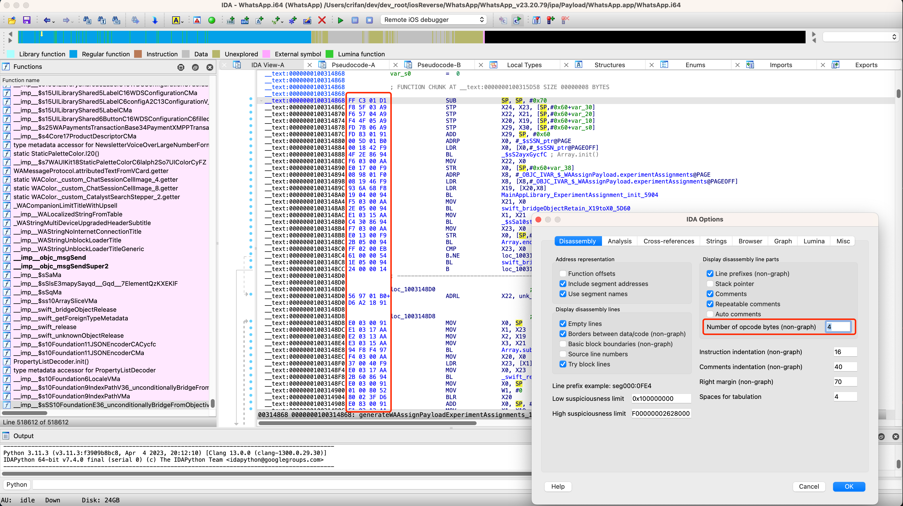
IDA中是否开启：自动注释
对于IDA中汇编代码，可以选择：是否开启自动注释
默认是：没有开启自动注释=Auto comments
效果是：
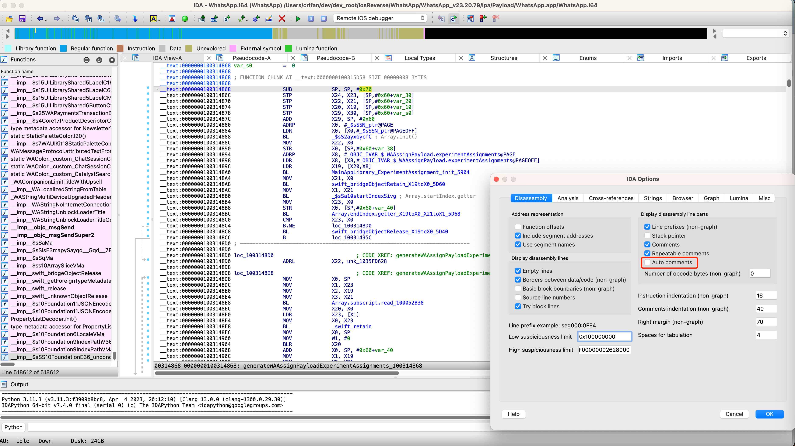
可以选择去开启：
IDA->Options->General->IDA Options->Disassembly->Display disassembly line parts- 勾选：
Auto comments
- 勾选：
效果是：
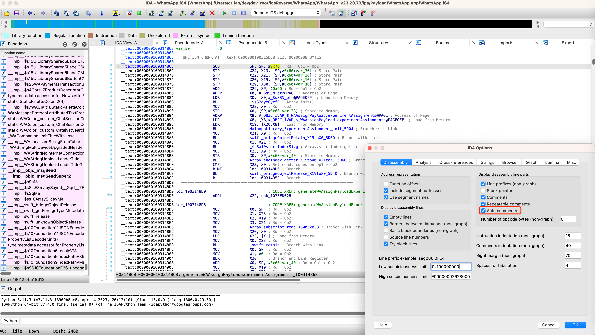
-》
自动给各个汇编代码，加上了注释
注释内容，主要是：汇编指令的含义概述
IDA汇编代码如何快速找到匹配的Xcode汇编代码
- 背景
- iOS逆向调试期间，Xcode去调试汇编代码期间，正在调试某行汇编代码
- 需求
- 想要找到Xcode正在调试的汇编代码，所对应的IDA中是哪行汇编代码，以及IDA中对应的伪代码是什么，目的是搞懂对应伪代码的大概的代码逻辑，便于尽快辅助的搞懂代码逻辑
- 方法
- 概述
- 看Xcode中的汇编和IDA中的汇编的地址最后几位（2位或3位），即可快速对应出代码的位置
- 概述
详解：
举例
举例1
从某app的IDA伪代码
292行
v52 = j__objc_msgSend(v51, (const char *)qword_38B4188, curDict, v4);
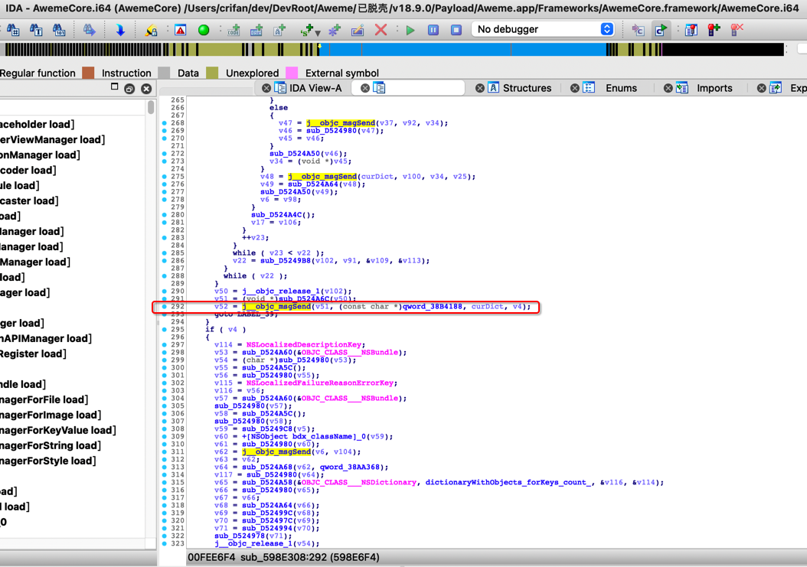
通过Tab键，找到了IDA汇编代码：
__text:000000000598E6F4 BL j__objc_msgSend
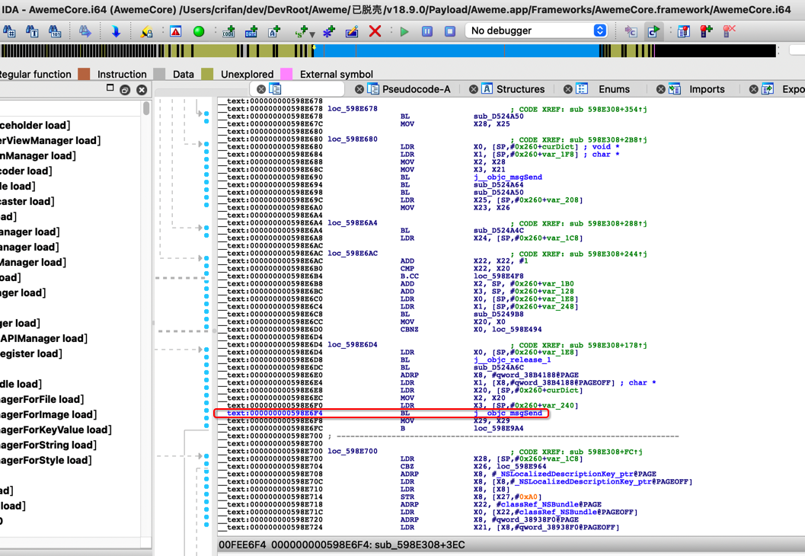
此处，不是十分确定，是不是一定对应着，正在调试的，Xcode汇编代码：
0x108a0a6f4 <+1004>: bl 0x11059feec ; ___lldb_unnamed_symbol1189160$$AwemeCore
不过其实通过去计算偏移量算出IDA汇编代码的偏移量，和Xcode中显示的+1004，对得上，其实就能判断出来。
不过此处，注意到一个细节，可以快速辅助帮忙确认是否匹配上：
汇编代码的地址的最后2位或最后3位：
IDA汇编代码 和 Xcode汇编代码 的最后2或3位 是一样的
就表示匹配上了：
Xcode汇编代码：
0x108a0a6ec <+996>: mov x2, x20
0x108a0a6f0 <+1000>: ldr x3, [sp, #0x20]
0x108a0a6f4 <+1004>: bl 0x11059feec ; ___lldb_unnamed_symbol1189160$$AwemeCore
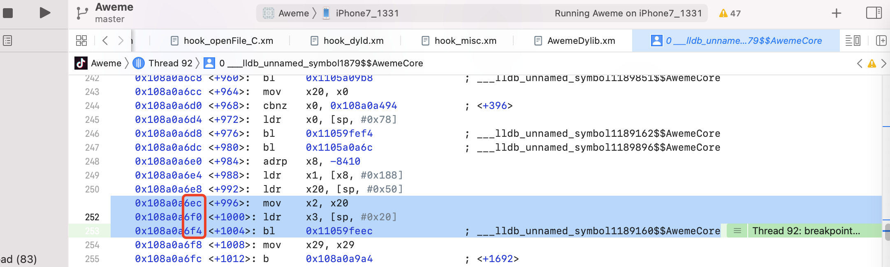
-》前后几行汇编的最后几位是：
- 6ec
- 6f0
- 6f4
而IDA汇编代码，前后几行：
__text:000000000598E6EC MOV X2, X20
__text:000000000598E6F0 LDR X3, [SP,#0x260+var_240]
__text:000000000598E6F4 BL j__objc_msgSend
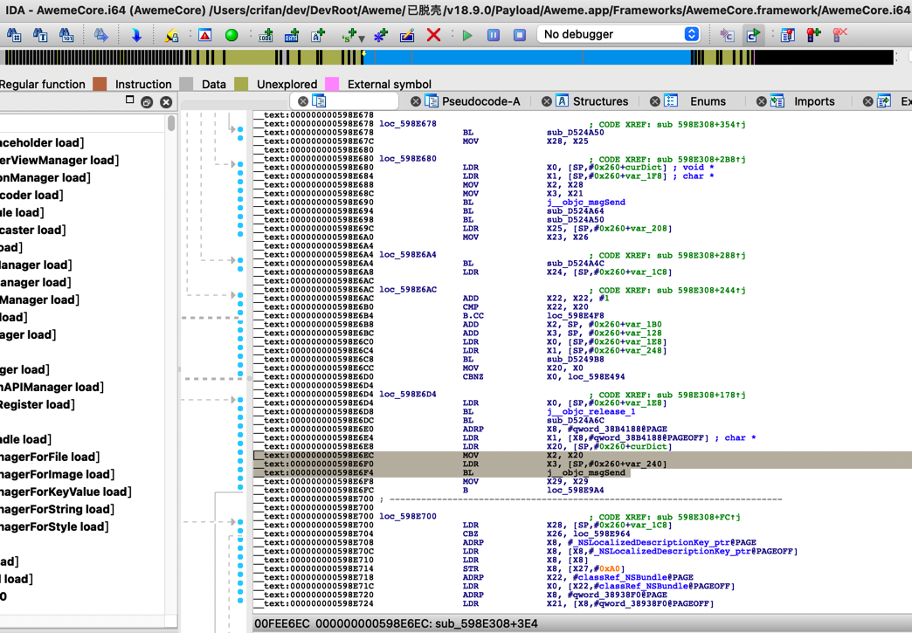
的最后几位：
- 6EC
- 6F0
- 6F4
分别都是对得上的。
其背后机制是：
- 二进制内的偏移量，相同代码，则肯定是相同的
- 二进制=动态库 的基地址=ALSR虽然是变化的
- 但是ALSR的基地址（一般）肯定是整数倍，至少最后很多位是0
所以最后的地址，最后几位，此处是3位，肯定都是一样的（虽然ALSR起始地址不同）
因此，可以通过最后3位的地址值，对得上，确定就是代码匹配上，对应得上的。
举例2
IDA伪代码：
288行的
v50 = j__objc_msgSend(curDict, setObjectForKeyedSubscript, curDictValue, curDictKey);
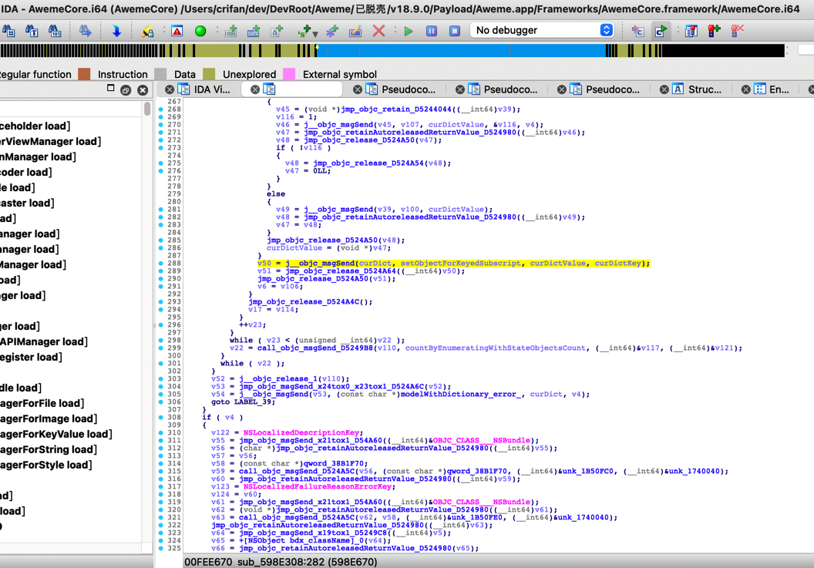
Tab键后，找到相关部分的代码：
__text:000000000598E67C MOV X28, X25
__text:000000000598E680
__text:000000000598E680 loc_598E680 ; CODE XREF: sub_598E308+2B8↑j
__text:000000000598E680 LDR X0, [SP,#0x260+curDict] ; void *
__text:000000000598E684 LDR X1, [SP,#0x260+setObjectForKeyedSubscript] ; char *
__text:000000000598E688 MOV X2, X28
__text:000000000598E68C MOV X3, X21
__text:000000000598E690 BL j__objc_msgSend
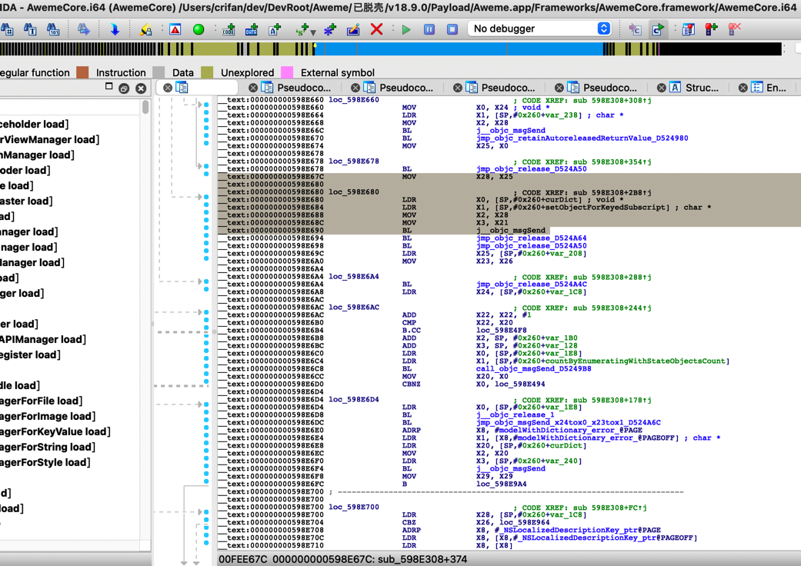
然后再去找：
IDA汇编 -> Xcode汇编
即可从找几行连续的，汇编地址的末尾3位
比如：
- 688
- 68C
- 690
即可回头找到Xcode中对应的代码位置：
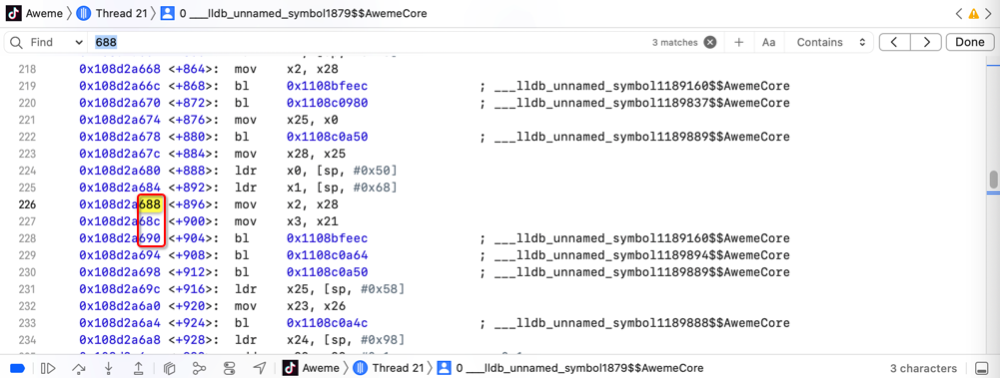
从而找到 对应代码段：
0x108d2a67c <+884>: mov x28, x25
0x108d2a680 <+888>: ldr x0, [sp, #0x50]
0x108d2a684 <+892>: ldr x1, [sp, #0x68]
0x108d2a688 <+896>: mov x2, x28
0x108d2a68c <+900>: mov x3, x21
0x108d2a690 <+904>: bl 0x1108bfeec ; ___lldb_unnamed_symbol1189160$$AwemeCore
效果很好。
就不用麻烦的计算偏移量，即可快速找到：
- IDA中
- 汇编代码
- 伪代码
- Xcode中
- 汇编代码
的相互对应的位置了。
-》便于快速定位代码位置，辅助尽快搞懂代码逻辑。